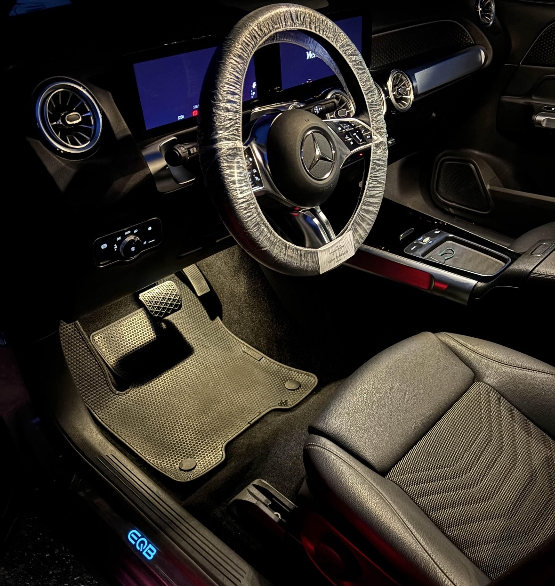
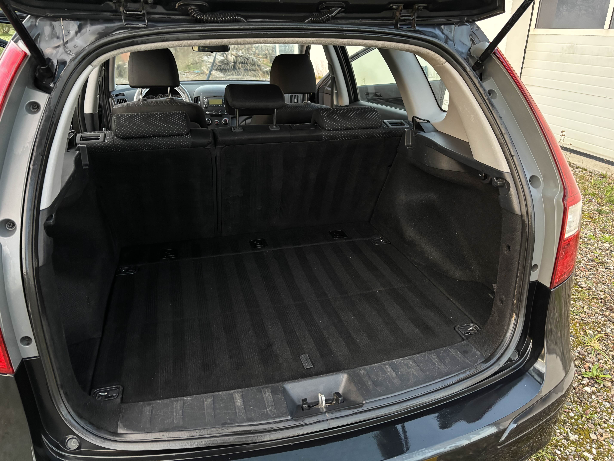
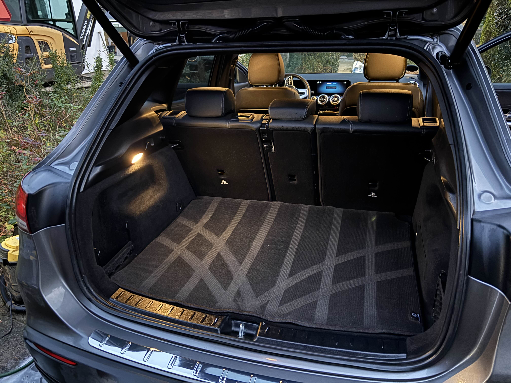

Grundig indvendig bilrengøring med fokus på detaljer
Med professionel indvendig bil rengøring hos Svendborg Bildetail sørger vi for, at din bil bliver ren, frisk og behagelig at opholde sig i. Vi fjerner støv, snavs og pletter og giver dit interiør nyt liv – perfekt både til hverdag, salg af bil eller som en årlig opfriskning.
Vores indvendige rengøring starter fra 549,-



Dette er inkluderet i indvendig rengøring
- Støvsugning af hele bilens interiør
- Aftørring af instrumentbord og overflader
- Fjernelse af støv og snavs i kroge
- Grundig rengøring af tæpper og måtter
- Rengøring af dørfalser
Tilkøb til din indvendige bilrengøring
- Sæderens +149 kr
- Fjernelse af hundehår +99 kr
Hvorfor vælge os til indvendig bil rengøring?
Vi hjælper bilejere i Svendborg og på Sydfyn med professionel bilpleje, hvor kvalitet og grundighed er i fokus. Vores indvendige rengøring giver ikke bare et pænt resultat – den forbedrer også komforten og bilens helhedsindtryk.
Ofte stillede spørgsmål
Hvor lang tid tager indvendig bil rengøring?
En indvendig bilrengøring tager typisk 2–3 timer afhængigt af bilens størrelse og hvor beskidt interiøret er.
Er indvendig rengøring nok, eller bør man vælge fuld detail?
Indvendig rengøring er perfekt, hvis fokus er kabinen. Ønsker du både indvendig og udvendig pleje, anbefaler vi fuld bildetailing.